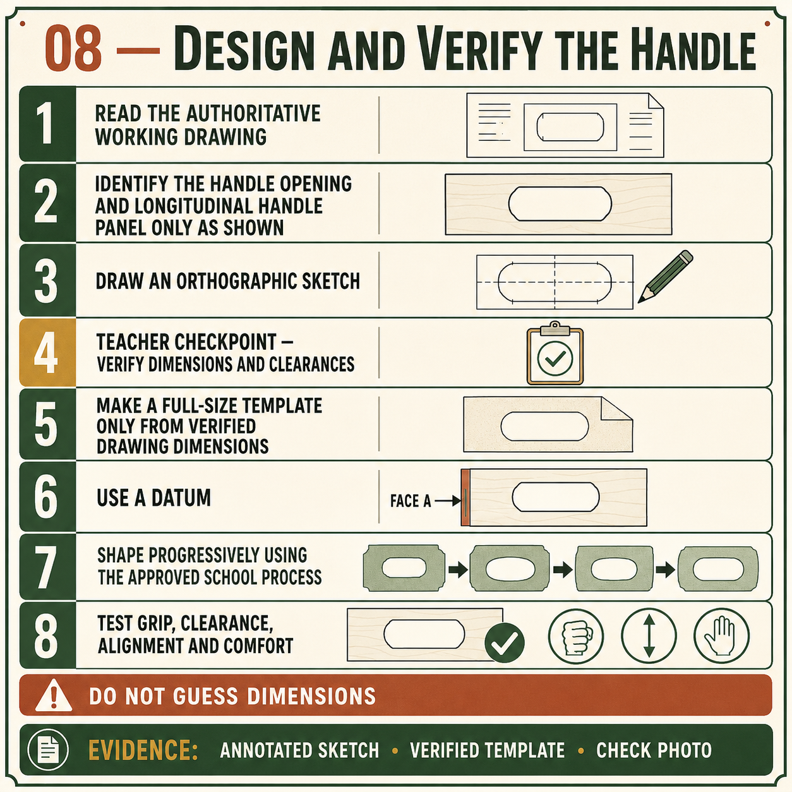

Your work
Student details
Your entries save automatically in this browser. Use Print / Save PDF before leaving the page.
Weeks 11-12
This module
Develop a practical handle, communicate it accurately and shape it in controlled stages under approved workshop procedures.
Theory 1
Designing a practical Carry-All handle

The Carry-All handle is a working part of the product, not just a decorative opening. It must allow the Carry-All to be lifted and carried while remaining connected to the central handle or handle panel and the surrounding structure. The approved working drawing shows a written 178 mm handle opening. This specification controls the opening and must not be changed by scaling the drawing, guessing from appearance or assuming that one hand size suits every user.
Ergonomics means designing for safe, comfortable and practical use. For this project, the handle should provide enough approved clearance for a user to grip it without scraping fingers against nearby timber. The shape should avoid narrow pressure points, sharp internal corners and rough edges that could make carrying uncomfortable. Comfort must still be considered within the approved drawing or teacher-provided template rather than by inventing a different opening or changing the structure without permission.
The handle also forms part of the Carry-All’s load path. When the product is lifted, force travels from the hand through the handle panel and into the sides, dividers, housings, corner joints and base structure. A handle that is poorly positioned, unevenly shaped or weakly connected may cause the Carry-All to tilt or place extra stress on one area. Balanced carrying depends on accurate location, sound material and correct assembly, not simply on making the opening look centred.
- Follow the approved drawing or template for the handle shape and location.
- Confirm the written 178 mm opening without measuring the drawing itself.
- Check hand clearance without claiming that one size suits every person.
- Inspect curves and transitions for bumps, sharp changes or weak narrow areas.
- Dry-fit the handle panel and check balance before final assembly.
Smooth transitions improve both function and appearance. Curves or shaped edges should flow evenly into surrounding surfaces rather than ending in sudden flats, dips or sharp changes. Symmetry may also matter where the approved design requires a balanced appearance. However, visual neatness must not come at the cost of removing excessive material or weakening the handle panel. Any shaping or correction method must follow teacher direction, the SWMS and the relevant school SOP.
The handle should be evaluated as part of the complete Carry-All. During dry assembly, check its orientation, housing fit, clearance, visual alignment and likely balance when the product is carried. Final evidence should explain how the handle meets the drawing, supports practical use and contributes to the overall appearance. A strong design judgement is based on observed function and verified specifications, not personal preference alone.
Theory 2
Communicating the handle through orthogonal drawing and a template
Orthogonal drawing communicates the Carry-All handle by showing it from separate straight-on directions. A front view can show the overall form of the handle opening and its relationship to the central handle panel. A side view can communicate the thickness and position of that panel within the Carry-All structure. These views should be read together because one view may show the shape clearly while another confirms how the part relates to adjoining components.
Centre lines are useful when the approved handle shape is symmetrical. They provide a reference for comparing the left and right sides and help identify whether the opening is balanced around the middle of the panel. Written dimensions control size and location. The drawing specifies a 178 mm handle opening, so that written value must be used rather than measuring the printed or on-screen drawing. Radii may be used to describe curves where they are specifically stated, but students must not invent a radius from appearance.
A full-size template can transfer the approved handle shape onto the timber component. Before use, the template must be verified against the drawing and teacher directions. Check its centre line, symmetry, orientation, written dimensions and identifying marks. Printing or copying can change size, so a template should never be assumed accurate simply because it looks correct. Any uncertainty must be resolved with the teacher before the shape is transferred.
- Read the front and side views together before interpreting the handle.
- Use the centre line to check position and symmetry.
- Follow written dimensions and specified radii only.
- Verify a full-size template before placing it on project material.
- Align the template with approved reference faces, edges and centre marks.
A template transfers design information; it does not replace design thinking. You still need to understand what the shape represents, why it is positioned there and how it affects clearance, appearance and the handle panel’s role in the structure. Blindly tracing a template without checking orientation or reference marks can produce a reversed, off-centre or incorrectly located opening even when the template itself is accurate.
Strong graphical communication allows another person to understand and verify the intended handle before practical work begins. Folio evidence may include an orthogonal sketch or drawing extract, labelled centre line, written opening dimension and a photograph of the verified template aligned on the handle panel. This demonstrates that the shape was transferred from approved information rather than guessed or scaled.
Theory 3
Shaping and refining the Carry-All handle safely
Shaping the Carry-All handle should be completed in controlled stages rather than trying to reach the final line in one operation. The approved drawing or verified template establishes the handle opening and its position on the central handle panel. The marked boundary must remain visible during the early stages so there is enough material for careful refinement. Cutting directly on or across the line too soon can permanently change the shape, reduce symmetry or weaken a narrow area.
The handle panel must be supported and secured using the teacher-approved workholding method. Poor support can allow the component to move, vibrate, split or become damaged near the opening. The work area, body position and cutting path must follow the SWMS, teacher demonstration and relevant school SOP. A coping saw, jigsaw or router may be used only when that process has been approved for the class and the student has received the required instruction and supervision.
Initial removal should stay outside the marked line. This creates a rough opening while preserving a small amount of material for later correction. Controlled refinement then brings the edge gradually towards the approved shape. The exact tools and techniques used for this stage depend on teacher direction. Whatever process is approved, remove small amounts, inspect frequently and stop if the timber begins to split, the component moves or the shape starts drifting across the line.
- Confirm the template, centre line, orientation and marked waste area.
- Secure and support the handle panel using the approved method.
- Remove the main waste while remaining outside the boundary line.
- Refine small sections gradually and compare both sides often.
- Stop and seek guidance before correcting an over-cut or damaged area.
Symmetry should be checked progressively rather than judged only when the opening is finished. Compare corresponding points on each side of the centre line and look for uneven curves, flat spots, sudden changes or one side extending further than the other. Viewing the opening from different angles can reveal faults that are difficult to see from directly above. Smooth transitions are important for appearance and comfort, but excessive refinement can enlarge the opening or create weak, narrow sections.
Over-cutting cannot be repaired by removing more timber from the opposite side. Doing so may make the opening larger while still failing to correct its position or shape. If a fault appears, identify its location and discuss the safest approved response with the teacher. Strong process evidence should show the marked boundary, staged shaping and a symmetry or quality check before final surface preparation.
Guided practice
Weeks 11-12 knowledge checks
Choose an answer, check it and use the progressive hints and feedback to improve.
Apply your learning
Scaffolded written responses
Write first, use the feedback prompts, then compare your reasoning with the appropriate response example.
Finish the two-week block
Save your evidence
Your work saves in this browser, but browser storage is not the official submission. Save the completed page as a PDF before changing devices or clearing browser data.
No marks, answers or personal information are sent from this webpage.